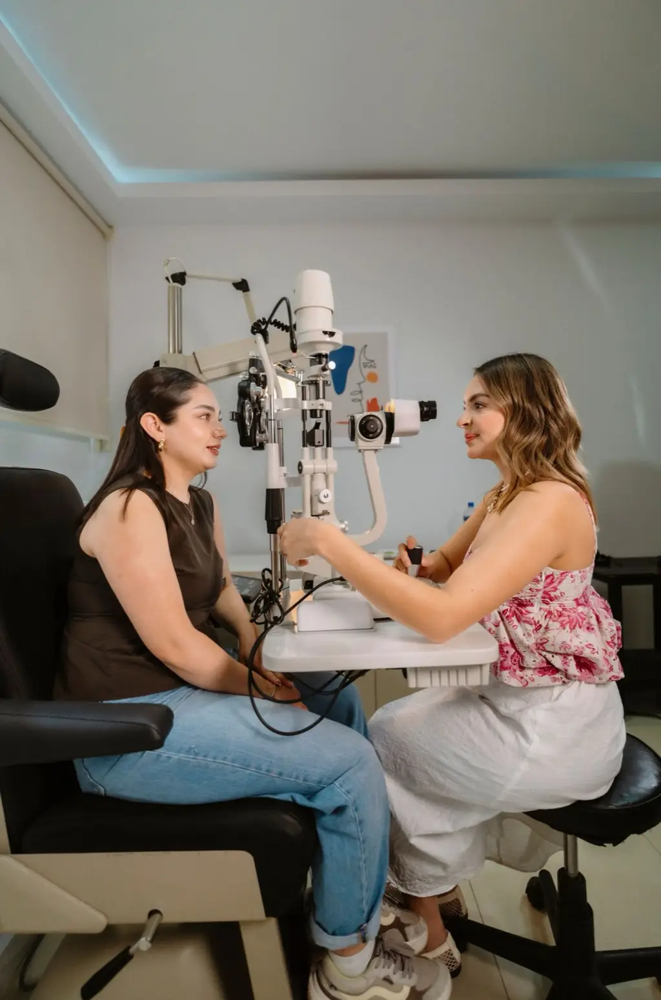

OCT
Coupe en haute définition de la rétine et du nerf optique, sans contact, en quelques minutes.
Voir les maladies de l'œil avant qu'elles ne se voient, et comprendre vos résultats le jour même.
DMLA, glaucome, rétinopathie diabétique : ces maladies avancent souvent sans symptôme. Un examen OCT de quelques minutes, sans contact avec l'œil, permet de les détecter tôt. Un ophtalmologiste vous explique les images à la fin du rendez-vous.
Si vous êtes diabétique, apportez votre dernier bilan.

Cliquez sur votre situation : le motif de rendez-vous se remplit tout seul.
Nos examens
Coupe en haute définition de la rétine et du nerf optique, sans contact, en quelques minutes.
Photographie du fond d'œil, souvent sans dilatation de la pupille.
Mesure de l'étendue de la vision, indispensable au suivi du glaucome.
Recherche des premières lésions de rétinopathie, compte rendu transmis à votre médecin.
Contrôles réguliers et orientation rapide vers un traitement si besoin.
Vos images comparées à celles des années précédentes pour détecter la moindre évolution.
Votre rendez-vous
Motif et antécédents indiqués pour préparer l'examen.
OCT, rétinographie ou champ visuel : sans contact et sans douleur.
L'ophtalmologiste vous montre les images et les commente.
Transmis à vous et à votre médecin, prochain contrôle planifié.
Parcours de soin
Patient diabétique, 61 ans
Patiente de 67 ans
Patient de 50 ans
Nos engagements
Dr Karim Haddad, ophtalmologiste, rétine médicale
« Diabétique depuis 15 ans, je n'avais jamais compris mes examens. Là, on m'a montré ma rétine et tout expliqué. »
« Examen rapide, sans gouttes, résultats le jour même. Rassurée pour un an. »
Questions fréquentes
Votre question n'est pas là ?
Appelez-nous au 05 36 49 84 27.
Un examen d'imagerie qui réalise des coupes très fines de la rétine et du nerf optique, sans contact avec l'œil. Il dure quelques minutes et n'est pas douloureux.
Pas toujours. Certains examens se font sans dilatation. Si elle est nécessaire, prévoyez de ne pas conduire pendant quelques heures.
Les personnes de plus de 55 ans, surtout en cas d'antécédent familial, de tabagisme ou de vision déformée. Un contrôle régulier est conseillé.
Le diabète peut abîmer les petits vaisseaux de la rétine sans symptôme au début. Un dépistage régulier permet de traiter tôt.
Rarement au début : il réduit la vision périphérique progressivement. D'où l'intérêt du dépistage en cas d'antécédent familial ou après 40 ans.
Les examens prescrits sont pris en charge par l'Assurance maladie selon la nomenclature. Nous vous indiquons le tarif avant.
Rendez-vous
Indiquez le motif et vos antécédents principaux. Nous vous rappelons pour fixer l'examen.
Du lundi au samedi, 8 h à 19 h
48 avenue de Rangueil, 31400 Toulouse
Patients venant de Toulouse, Ramonville-Saint-Agne, Castanet-Tolosan, Balma, Blagnac, Colomiers, Haute-Garonne.